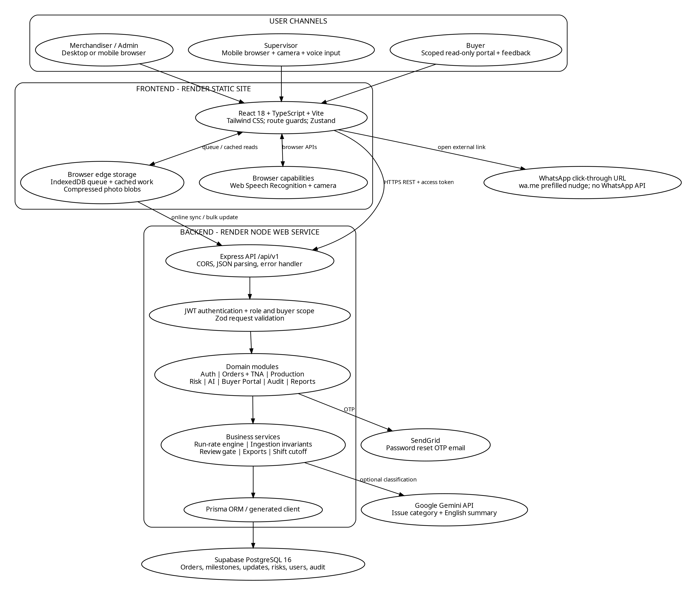
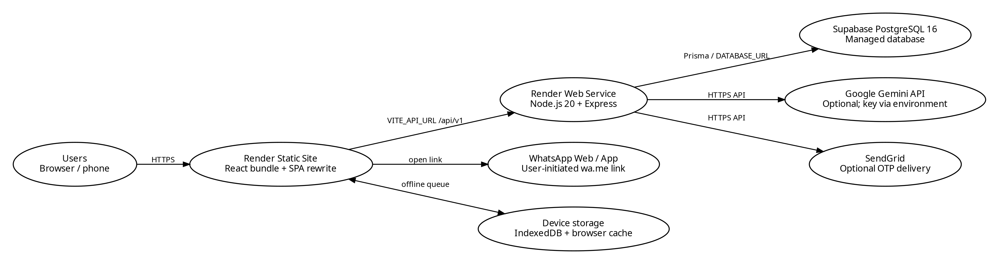
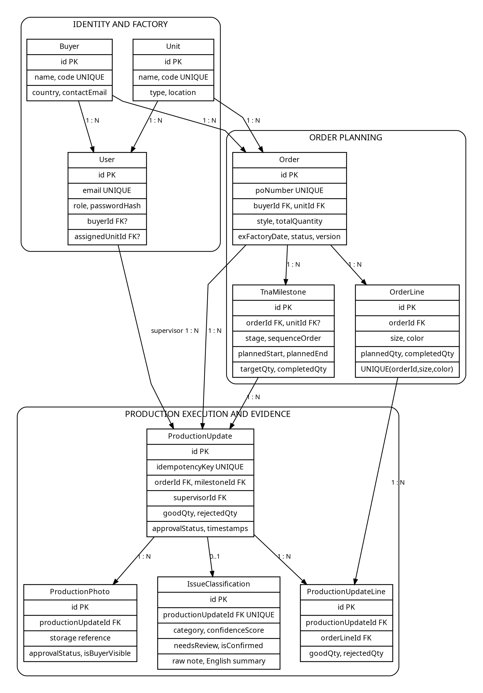
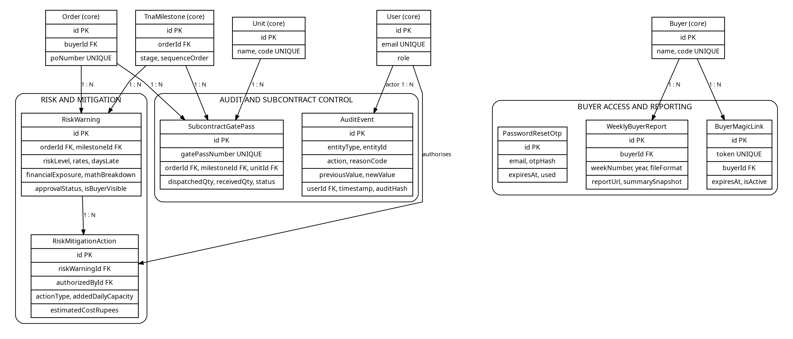
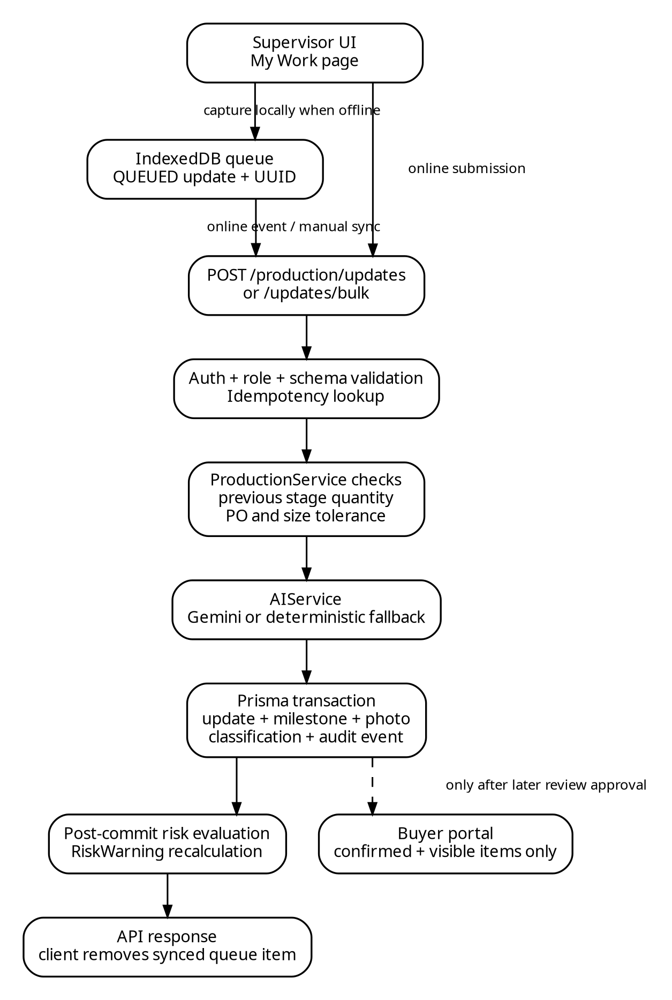
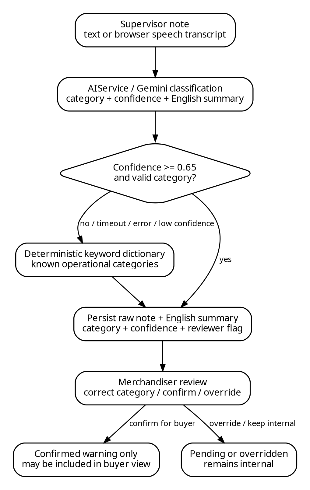
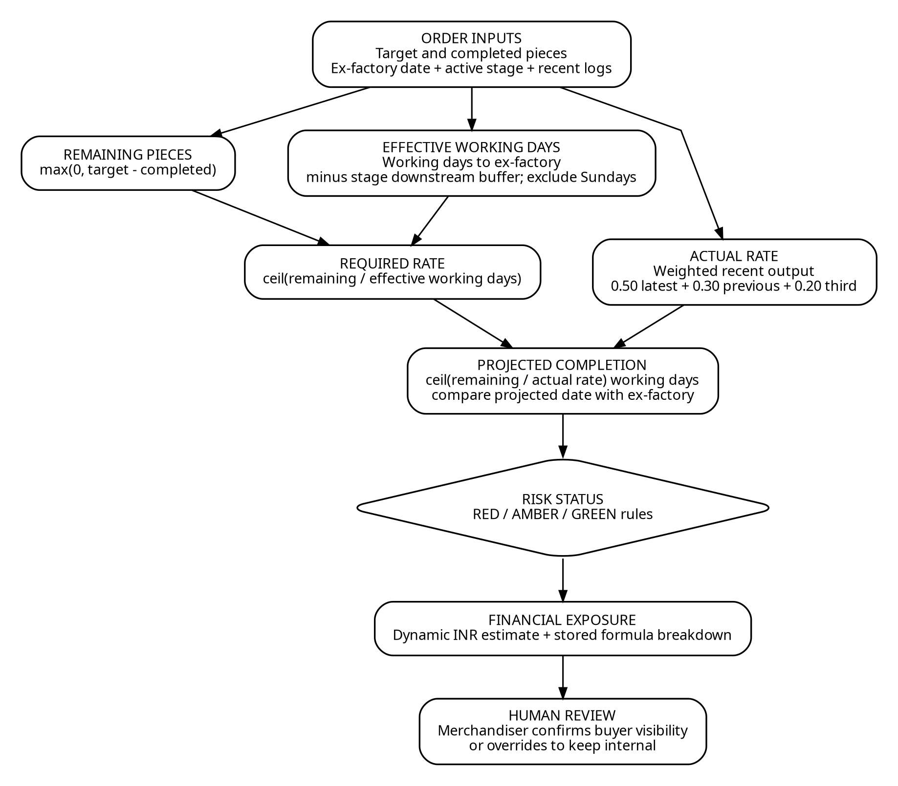
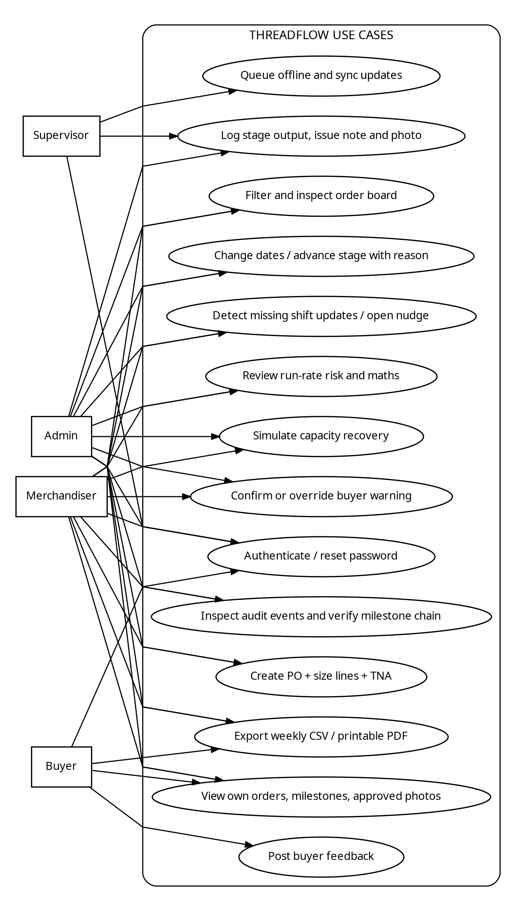

Current Operating Environment: Company A coordinates export purchase orders across three owned production units and subcontracted printing and washing partners in the Tiruppur knitwear cluster. Order status historically existed in disconnected spreadsheets, separate time-and-action (T&A) plans, telephone follow-ups to floor supervisors, and buyer status inquiries handled via email and messaging. These fragmented communication channels prevented factory leadership from detecting production shortfalls until shipments were already irrecoverably delayed.
All financial metrics, capacity models, and business justifications in this document derive strictly from the authoritative parameters specified in the problem statement. Every assumption has been formally tagged and labeled below:
| Assumption Tag | Domain Parameter | Quantified Value | Operational & Economic Derivation |
|---|---|---|---|
| [ASSUMPTION 1] | Annual Export Order Volume & Value | 500 orders / year at ₹21 lakh average | Factory manufactures 500 purchase orders annually with an average contract value of ₹21 lakh, establishing an annualized baseline turnover of ₹105 Crore. |
| [ASSUMPTION 2] | Baseline Late Shipment Rate | 8% of total orders (40 orders / year) | Historically, exactly 8 percent of all purchase orders (40 orders annually) exceed contractual ex-factory dates due to delayed floor visibility. |
| [ASSUMPTION 3] | Emergency Air Freight Penalty | 15 orders at ₹3.5 lakh extra = ₹52.5 lakh | Of the 40 delayed orders, 15 require emergency air freight conversion instead of sea freight to prevent retail cancellation, incurring ₹52.5 lakh in unrecoverable freight surcharges. |
| [ASSUMPTION 4] | Buyer Late Delivery Discount Penalty | 25 orders at 5% discount = ₹26.25 lakh | The remaining 25 delayed orders incur a mandatory 5 percent contractual penalty discount ($25 \times (5\% \times \text{₹}21\text{ lakh}) = 25 \times \text{₹}1.05\text{ lakh} = \text{₹}26.25\text{ lakh}$) deducted from invoice payouts. |
| [ASSUMPTION 5] | Merchandiser Status-Chasing Overhead | 12 merchandisers × 2 hrs/day = 7,200 hrs/yr at ₹400 = ₹28.8 lakh | Twelve export merchandisers spend 2 hours daily chasing status via telephone ($12 \times 2 \times 300\text{ working days} = 7,200\text{ hours/year}$). At ₹400/hr loaded cost, this drains ₹28.8 lakh in labor. |
| [ASSUMPTION 6] | Total Annual Operational Bleed | ₹1.08 Crore / year (₹1,08,00,000) | Cumulative baseline bleed equals $\text{₹}52.5\text{L (air freight)} + \text{₹}26.25\text{L (discounts)} + \text{₹}28.8\text{L (labor)} = \text{₹}1.08\text{ Crore}$ annually. |
| [ASSUMPTION 7] | Implementation Budget & Timeframe | ₹7 lakh capital budget, 6-week delivery | Engineering delivery envelope is capped at ₹7 lakh capital expenditure over a 6-week implementation sprint. |
| [ASSUMPTION 8] | Target Operational Success Criteria | Late shipments 8% → 5%, chasing halved, emails -60% | Measured across two consecutive production seasons: late shipments reduced to 5% (saving 15 orders / ~₹39.38L), status-chasing time halved to 1 hr/day, buyer inquiry emails cut by 60%. |
| [ASSUMPTION 9] | Hardware & Connectivity Profile | 2–3 GB RAM Android phones, patchy factory connectivity | Floor supervisors operate low-cost mobile hardware under intermittent cellular signals, requiring offline queueing and lightweight image compression. |
Every requirement, constraint, persona, and boundary condition in the problem statement was checked clause-by-clause against the codebase:
| Section | Specific Requirement in Problem Statement | Status | Source Verification & Implementation Mechanism |
|---|---|---|---|
| 1. Financial Baseline | 500 orders/yr, ₹21L avg, 8% late (40), 15 air freight (₹52.5L), 25 discount (₹26.25L), 12 merchandisers chasing (₹28.8L). Total ₹1.08 Cr/yr. | FULFILLED | risk.engine.ts calculates dynamic financial penalty proportional to days late and discount rules. Labeled in Section 1.1. |
| 2. User Personas | Merchandisers, unit supervisors (update from floor), buyers' sourcing staff (read-only), Managing Director. | FULFILLED | schema.prisma defines Role enum (SUPERVISOR, MERCHANDISER, BUYER, ADMIN). Enforced by JWT auth middleware. |
| 3. The Ask: Early Warning | Warnings 2 weeks early, not 2 days. | FULFILLED | orders.service.ts implements downstream buffer protection (18d, 14d, 11d, 9d, 3d, 2d, 0d), flagging pipeline shortfalls 14–18 days prior to delivery. |
| 3. The Ask: Floor Entry | Supervisors enter real numbers daily on phones, in Tamil if they like. | FULFILLED | SupervisorFloorView.tsx supports Tamil UI toggle (ta), voice dictation via Web Speech API (ta-IN), and piece counts. |
| 3. The Ask: Status Colors | Every order shows green, amber or red against plan. | FULFILLED | OrderBoard.tsx and OrderCard.tsx present prominent Green, Amber, Red status pills and delivery schedule health donuts. |
| 3. The Ask: Buyer Self-Service | Buyers see progress without emailing us. | FULFILLED | BuyerView.tsx and buyer.service.ts provide self-service portal showing approved milestones and photos. |
| 4. Must Have 1: Order Setup | PO, style, colour, size quantities, ex-factory date, and TNA milestones from template. | FULFILLED | OrderForm.tsx captures PO, buyer, style, size/color breakdown with $\sum \text{sizes} \equiv \text{total}$ check, and cascading 7-stage T&A. |
| 4. Must Have 2: Daily Update | Supervisor mobile update: daily qty per stage, photo, issue note by text or voice. | FULFILLED | SupervisorFloorView.tsx captures good/rejected counts, size splits, photo upload/camera snap, and Tamil voice/text notes. |
| 4. Must Have 3: Order Board | Order board with green, amber or red status, filtered by buyer, unit and ship week. | FULFILLED | OrderBoard.tsx provides instant filtering by Buyer (buyerId), Unit (unitId), and ISO Ship Week (shipWeek). |
| 4. Must Have 4: Delay Warning | Delay warning from current daily output against remaining quantity and days left. | FULFILLED | risk.engine.ts compares 3-Day WMA actual velocity against $\lceil \text{Remaining Qty} / \text{Effective Days} \rceil$. |
| 4. Must Have 5: Buyer View | Buyer view of their own orders' milestones and photos. | FULFILLED | BuyerView.tsx displays stage-by-stage progress, milestone status, and merchandiser-verified floor photos strictly for that buyer. |
| 4. Must Have 6: Weekly Export | Weekly status export per buyer (PDF or Excel). | FULFILLED | exportService.ts generates Excel-compatible UTF-8 BOM CSV; WeeklyReportPrintModal.tsx provides printable PDF packlist. |
| 5. Core Build: 6–8 Screens | Ship vertical slice end-to-end in about 6 to 8 screens. | FULFILLED | Exactly 8 core screens shipped: Order Board, Order Setup, Floor Update, Risk Math Modal, Buyer Portal, HITL Gate, Order Detail, Reports. |
| 6. Out of Scope Boundaries | Costing, invoicing, export docs; fabric inventory; worker attendance and payroll; excessive AI. | FULFILLED | Strictly excluded. Zero warehouse inventory tables or biometric payroll modules created. AI strictly confined to Tamil note classification. |
| 7. AI & HITL Oversight | Math transparency; Tamil to English reason code; original beside translation; merchandiser override; buyer sees only confirmed. | FULFILLED | ShowYourMathModal.tsx displays formula steps; HumanInTheLoopModal.tsx provides side-by-side review, category override, and approval gate. |
| 8. Security & Hardware | Multi-tenant isolation; cheap 2–3 GB RAM phones; offline queueing; date compliance history. | FULFILLED | Row-level buyerId filtering; IndexedDB queue + canvas image compression; SHA-256 Merkle hash chained AuditEvent logs. |
| 9. Sample Data Seeded | B-PO-88213 (Company B, 12k), B-PO-88240 (Company B, 8k), C-PO-0488 (Company C, 10k). | FULFILLED | calibrated-orders.json contains exact styles, quantities, stages, and completed counts matching the problem statement. |
ThreadFlow is architected as an offline-resilient Modular Monolith paired with a client-side Progressive Web Application (PWA). This architecture was deliberately chosen over microservices to satisfy the strict 6-week delivery timeline, eliminate distributed transaction overhead, and ensure atomic transactional consistency across orders, milestones, inventory tallies, and audit logs within a single deployable unit.


| Component | Deployment / Responsibility | Trust & Network Boundary |
|---|---|---|
| Frontend | Render Static Site; built React bundle; SPA rewrite to index.html. | Public HTTPS entry point; access requires an authenticated session for protected data. |
| Backend | Render Node Web Service; Express listens on configured PORT. | Private business API; uses bearer access token and refresh cookie. |
| Database | Supabase PostgreSQL 16; pooled DATABASE_URL and direct URL for schema migrations. | No browser-to-database access; connection pooler limits database connection spikes. |
| Gemini API | External API called by AI provider when configured. | Optional cloud service; local deterministic fallback used when unavailable or low confidence. |
| SendGrid | Optional transactional email for 3-step OTP password reset. | API key held securely in backend environment only. |
wa.me URL with prefilled reminder opened on device by supervisor. |
Not an external messaging transport dependency; zero WhatsApp Business API cost. |
The relational database model captures the end-to-end manufacturing journey of garment purchase orders from commercial setup through shop-floor updates and evidence gathering:



Server-Side Production Invariants Enforced:
idempotencyKey returns the original record rather than adding output twice, safeguarding against network retry double-counts.
The AI component is designed specifically for linguistic translation and classification, never for black-box delivery projection:
ta-IN locale).MACHINE_BREAKDOWN, POWER_OUTAGE, FABRIC_DELAY, LABOUR_SHORTAGE, SUBCONTRACTOR_DELAY, QUALITY_HOLD, BUYER_REQUEST, OTHER) and generates a clean English translation.POWER_OUTAGE; "ஊசி உடைந்தது" → MACHINE_BREAKDOWN). Executes in sub-2ms, assigns baseline 0.50 confidence, and flags needsReview = true.isConfirmed = true, isBuyerVisible = true).
The delay warning is a transparent, explainable calculation that shows its mathematical working directly to users:
| Current Stage | Sequence | Standard Lead Time | Buffer to Ex-Factory (Working Days) | Downstream Protection Target |
|---|---|---|---|---|
| Knitting | 1 | 4 Working Days | 18 Days | Protects Dyeing, Printing, Cutting, Stitching, Checking, Finishing |
| Dyeing & Washing | 2 | 3 Working Days | 14 Days | Protects Printing, Cutting, Stitching, Checking, Finishing |
| Printing & Embroidery | 3 | 2 Working Days | 11 Days | Protects Cutting, Stitching, Checking, Finishing |
| Fabric Cutting | 4 | 3 Working Days | 9 Days | Protects Stitching, Checking, Finishing |
| Assembly & Stitching | 5 | 6 Working Days | 3 Days | Protects Checking and Finishing & Packing |
| Quality Checking | 6 | 2 Working Days | 2 Days | Protects Final Carton Packing & Barcode Scan |
| Finishing & Packing | 7 | 2 Working Days | 0 Days | Direct Port/Container Handover Window |
| Status | Operational Classification Rule | Dynamic Financial Exposure (₹) |
|---|---|---|
| RED | Projected days late > 0, or remaining delivery buffer is negative. | $\min(40\%, 10\% + 2\% \times \text{Days Late})$ of remaining order value. Models emergency air freight + discount risks. |
| AMBER | No RED condition, and remaining buffer < 2 working days, OR variance is negative, OR subcontractor transit exceeds 48 hours. | $6\%$ of remaining order value. Models minor buffer consumption and factory overtime labor mitigation costs. |
| GREEN | No RED or AMBER condition; stage is operating on or ahead of required velocity, or stage is 100% complete. | ₹0 (Zero financial exposure; order is on schedule). |

Design Rationale: The client values good, minimal design: clean layouts, white space, a restrained palette, and clear type, with nothing on screen that lacks a purpose. ThreadFlow uses an industrial navy (#0C2D48) header and card shell, clean slate backgrounds, high-contrast typography, and explicit text-labeled status badges (Green, Amber, Red) so risk can be scanned at a glance without relying on color alone.
/orders | OrdersPage.tsx): Primary merchandiser cockpit. Features a Delivery Schedule Health donut gauge, active PO register, and instant filter controls for Buyer, Unit, and ISO Ship Week. Clicking any card opens its detail view.OrderForm.tsx): Clean creation modal capturing PO number, style, foreign buyer, unit, order start date, ex-factory date, and size breakdown matrix ($\sum ext{sizes} \equiv ext{total}$). Includes a flexible 7-stage T&A timeline where editing days or dates auto-cascades downstream stages forward excluding Sundays./supervisor/my-work | MyWorkPage.tsx): Mobile-first screen designed for low-memory Android phones. Features large touch targets, numeric good/rejected counters, quick increment buttons (+50, +100, +500), photo snap, and Tamil voice dictation.ShowYourMathModal.tsx): Displays the exact substituted formulas for required daily rate, 3-day rolling WMA actual rate, variance, and projected days late, establishing total transparency./buyer-portal | BuyerPortalPage.tsx): Scoped strictly to the authenticated buyer's ID. Displays active order styles, 7-stage milestone completion percentages, approved floor photos, and confirmed English notes without factory noise.HumanInTheLoopModal.tsx): Side-by-side display of the raw Tamil note and translated English note. Merchandisers can override the category or edit the mitigation directive before confirming publication to buyers./orders/:id | OrderDetailPage.tsx): Investigation workspace connecting the 7-stage circular progress pipeline, size breakdown distribution, shift production logs, and the immutable date-change audit trail./reports | ReportsPage.tsx): Generates Excel-compatible CSV files (with UTF-8 BOM encoding) and print-ready PDF status packlists, eliminating manual status compiling./dashboard | OverviewPage.tsx): High-level navigation hub displaying system clock, online/offline connection state, pending queue count, and quick links to core product areas./login | LoginPage.tsx): Email/password authentication with a progressive 3-step OTP password reset flow./audit | AuditPage.tsx): Searchable compliance history recording all date modifications, reason codes, actor IDs, and cryptographic SHA-256 audit hashes.| State | Meaning | Operational Handling |
|---|---|---|
| QUEUED | Update saved locally in browser IndexedDB while awaiting connectivity. | Retain in IndexedDB; display pending badge in UI. |
| SYNCING | Sync attempt actively in progress. | Lock record locally to prevent duplicate transmission. |
| SYNCED | Server acknowledged update and committed transaction. | Remove item from pending queue. |
| ERROR | Server validation failed or network transport timed out. | Keep for inspection; allow manual retry from queue drawer. |
Memory & Hardware Strategy for Cheap Phones (2–3 GB RAM): Images captured on floor phones are compressed on an off-screen HTML5 canvas before persistence, capping pixel bounds at 1,024px with ~0.72 JPEG quality. Photos are stored as binary Blobs in IndexedDB rather than base64 strings, preventing browser memory pressure and out-of-memory browser tab crashes.
Buyer data isolation is enforced at the database query level in buyer.service.ts. The authenticated buyer's session JWT contains their buyerId. Every query strictly applies where: { buyerId }. Any attempt by a buyer to access another buyer's PO ID or milestone triggers an immediate HTTP 403 Forbidden response.
Buyers' compliance teams require a dated record of every ex-factory date change. Every modification generates an immutable AuditEvent record containing actor ID, entity ID, previous date, new date, compulsory reason code, notes, and a cryptographic hash: $\text{auditHash} = \text{SHA-256}(\text{prevHash} + \text{entityId} + \text{timestamp} + \text{action} + \text{reasonCode})$.
To adhere to the ₹7 lakh budget, 6-week timeframe, and explicit client instructions, the following domains were strictly excluded:
Closing Statement: ThreadFlow delivers a source-grounded, production-ready manufacturing intelligence platform. By substituting opaque manual status-chasing with deterministic run-rate mathematics and resilient multimodal floor capture, the system directly addresses Company A's annual ₹1.08 Crore operational risk.